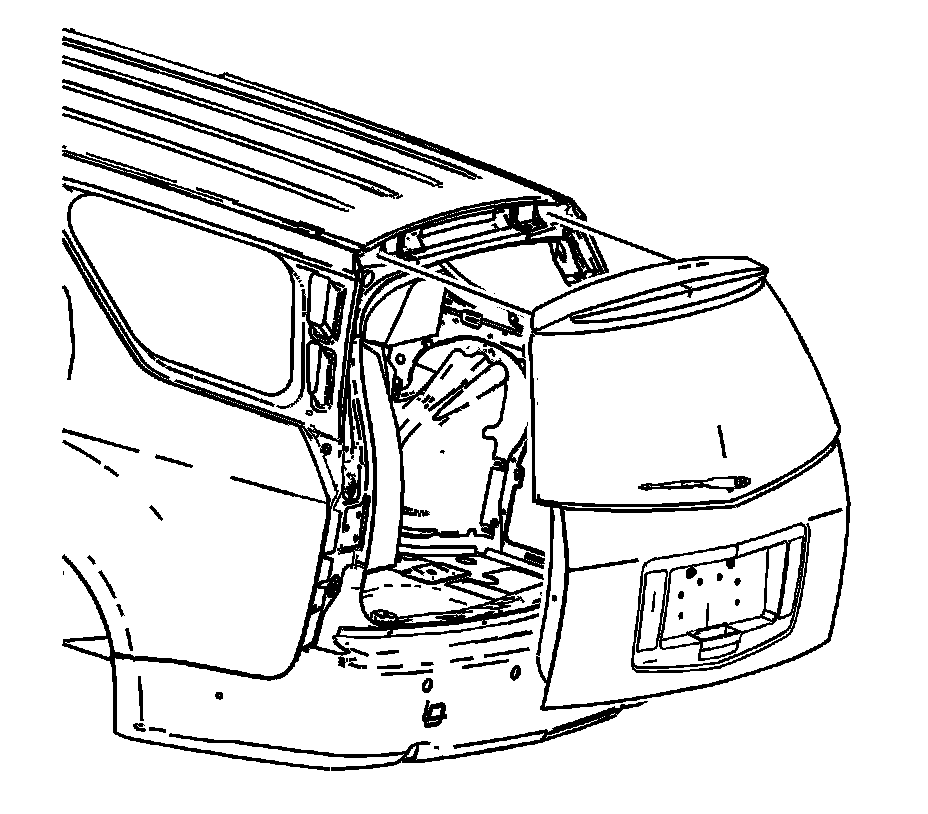

Trunk / Liftgate: Service and Repair
Liftgate Replacement
Removal Procedure
1. Remove the rear wiper arm. Refer to Rear Window Wiper Arm Replacement (Rear Window Wiper Arm Replacement) .
2. Open the liftgate.
3. Remove/disconnect the liftgate actuator rod from the liftgate. Refer to Liftgate Actuator Rod Replacement (Service and Repair) .
4. Remove the liftgate struts. Refer to Liftgate Strut Replacement (Service and Repair) .
5. Remove the liftgate interior trim panel. Refer to Liftgate Trim Panel Replacement (w/o TB5) (Service and Repair)Liftgate Trim Panel Replacement (w/TB5) (Service and Repair) .
6. Remove the liftgate applique. Refer to Liftgate Applique Replacement () .
7. Remove the liftgate wiring harness.
8. Remove the rear washer hose from the wiper motor assembly.
9. Remove the wiper motor. Refer to Liftgate Wiper Motor Replacement (Liftgate Wiper Motor Replacement) .
10. With a grease pencil, mark the location of the liftgate hinge to the liftgate.
11. With the aid of an assistant, remove the bolts from the liftgate hinge.

12. With the aid of an assistant, remove the liftgate from the vehicle.
Installation Procedure
1. With the aid of an assistant, align the marks on the liftgate with the liftgate hinges.
Notice: Refer to Fastener Notice (Fastener Notice) .
2. With the aid of an assistant, install the liftgate hinge bolts.
Tighten the hinge bolts to 25 N.m (18 lb ft).
3. Install the liftgate struts. Refer to Liftgate Strut Replacement (Service and Repair) .
4. Install the washer hose to the wiper motor assembly.
5. Install the wiper motor. Refer to Rear Window Wiper Arm Replacement (Rear Window Wiper Arm Replacement) .
6. Install the liftgate wiring harness.
7. Install the liftgate applique. Refer to Liftgate Applique Replacement () .
8. Install the liftgate trim panel. Refer to Liftgate Trim Panel Replacement (w/o TB5) (Service and Repair)Liftgate Trim Panel Replacement (w/TB5) (Service and Repair) .
9. Install/connect the liftgate actuator rod to the liftgate. Refer to Liftgate Actuator Rod Replacement (Service and Repair) .
10. Install the rear wiper arm. Refer to Rear Window Wiper Arm Replacement (Rear Window Wiper Arm Replacement) .